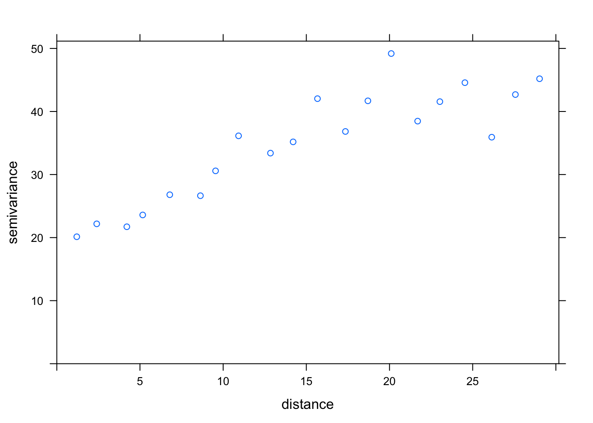

Section 4 Example Analysis
4.1 Load Data
This tutorial uses the Nebraska Interstate wheat trials, first published by Stroup et al in 1991 and reused extensively in field spatial variation studies.
library(agridat); library(dplyr); library(tidyr)
data("stroup.nin")
Nin <- stroup.nin %>% mutate(col.width = col * 1.2, row.length = row * 4.3) %>%
mutate(name = case_when(is.na(as.character(rep)) ~ NA_character_,
TRUE ~ as.character(gen))) %>% arrange(col, row) %>%
mutate(plot = 1:n())
Nin.na <- filter(Nin, !is.na(rep))4.1.1 Examine Data
## gen rep yield col row col.width row.length name plot
## 1 Lancer <NA> NA 1 1 1.2 4.3 <NA> 1
## 2 NE83407 R1 19.40 1 2 1.2 8.6 NE83407 2
## 3 Buckskin R1 29.85 1 3 1.2 12.9 Buckskin 3
## 4 NE87612 R1 28.15 1 4 1.2 17.2 NE87612 4
## 5 Vona R2 26.80 1 5 1.2 21.5 Vona 5
## 6 NE87512 R2 20.20 1 6 1.2 25.8 NE87512 6## 'data.frame': 242 obs. of 9 variables:
## $ gen : Factor w/ 56 levels "Arapahoe","Brule",..: 12 16 3 44 56 41 34 7 3 44 ...
## $ rep : Factor w/ 4 levels "R1","R2","R3",..: NA 1 1 1 2 2 3 3 3 4 ...
## $ yield : num NA 19.4 29.9 28.1 26.8 ...
## $ col : int 1 1 1 1 1 1 1 1 1 1 ...
## $ row : int 1 2 3 4 5 6 7 8 9 10 ...
## $ col.width : num 1.2 1.2 1.2 1.2 1.2 1.2 1.2 1.2 1.2 1.2 ...
## $ row.length: num 4.3 8.6 12.9 17.2 21.5 25.8 30.1 34.4 38.7 43 ...
## $ name : chr NA "NE83407" "Buckskin" "NE87612" ...
## $ plot : int 1 2 3 4 5 6 7 8 9 10 ...This data set actually has no missing data – this is a balanced trial. However, there are empty fill plot with no data which creates some issues regarding NA handling.
Plot raw data as it appeared in the field:
ggplot(Nin, aes(x = row, y = col)) +
geom_tile(aes(fill = yield), col = "white") +
#geom_text(aes(label = name)) +
geom_text(aes(label = plot)) +
geom_tileborder(aes(group = 1, grp = rep), lwd = 1.2) +
scale_fill_gradient(low = "white", high = "blue") +
scale_x_continuous(breaks = seq(1,max(Nin$row), 1)) +
scale_y_continuous(breaks = 1:max(Nin$col)) +
labs(x = "row", y = "column", title = "field plot layout") +
theme_classic() +
theme(axis.text = element_text(size = 12),
axis.title = element_text(size = 14),
legend.title = element_text(size = 14),
legend.text = element_text(size = 12)) Black lines delineate the blocks.
Black lines delineate the blocks.
It’s also helpful to plot raw response data:
par(mfrow=c(1,3))
boxplot(yield ~ rep, data = Nin, xlab = "rep", ylab = "yield (bu/acres)", col = "red2", main = "yield across blocks")
boxplot(yield ~ row, data = Nin, xlab = "row", ylab = "yield (bu/acres)",col = "dodgerblue2", main = "yield across rows")
boxplot(yield ~ col, data = Nin, col = "gold", xlab = "column", ylab = "yield (bu/acres)",main = "yield across columns")
4.2 Test for Spatial Correlation
4.2.1 Moran’s I
First, run a standard linear model of the experiment:
library(nlme); library(car)
nin.lme <- lme(yield ~ gen, random = ~1|rep,
data = Nin,
na.action = na.exclude)
Anova(nin.lme, type = "2")## Analysis of Deviance Table (Type II tests)
##
## Response: yield
## Chisq Df Pr(>Chisq)
## gen 48.152 55 0.7317Next, establish and weight neighbors. In this example, only adjacent neighbors in the rook formation are used and are weighted proportionally according to their representation as neighbors to an individual. That is, if a unit has 4 adjacent neighbors, each neighbor is weighted as 0.25. If there are only two neighbors, each is weighted as 0.5.
The function cell2nb is a simplified function for setting neighbors when working with data laid out in a regular grid, which is a common feature of many agricultural field trials.
library(spdep)
xy.rook <- cell2nb(nrow = max(Nin$row), ncol = max(Nin$col), type="rook") # make sur your data sorted by the variables assigned to row and col (in that order), and there is one and only one observation in the data set for each unique row/col combination. Even missing plots need a rowRook adjacency plot for the NIN data
 Each observation considers “neighbors” to be those which touch the cell in a row or column oriention, but not diagonal.
Each observation considers “neighbors” to be those which touch the cell in a row or column oriention, but not diagonal.
Conduct Moran’s test via standard t-test and using MC sampling.
resid.lme <- residuals(nin.lme)
names(resid.lme) <- Nin$plot
moran.test(resid.lme, nb2listw(xy.rook), na.action = na.exclude)##
## Moran I test under randomisation
##
## data: resid.lme
## weights: nb2listw(xy.rook)
## omitted: 1, 12, 23, 34, 45, 56, 59, 67, 78, 89, 100, 108, 111, 122, 133, 144, 155, 204
##
## Moran I statistic standard deviate = 8.1602, p-value < 2.2e-16
## alternative hypothesis: greater
## sample estimates:
## Moran I statistic Expectation Variance
## 0.402504491 -0.004484305 0.002487522##
## Monte-Carlo simulation of Moran I
##
## data: resid.lme
## weights: nb2listw(xy.rook)
## omitted: 1, 12, 23, 34, 45, 56, 59, 67, 78, 89, 100, 108, 111, 122, 133, 144, 155, 204
## number of simulations + 1: 1000
##
## statistic = 0.4025, observed rank = 1000, p-value = 0.001
## alternative hypothesis: greaterPlot Spatial dependence of resids
library(purrr)
res.nn1 <- map_dbl(xy.rook, function(j) mean(resid.lme[j]))
c <- signif(cor(resid.lme, res.nn1, use = "pairwise.complete.obs"), 2)
plot(x = resid.lme, y = res.nn1,
main = paste0("r = ", c), xlab = "residual", ylab = "average residual of neighbor (rook)")
4.2.2 Note on Geary’s C
At this time, the spdep function geary.test() for Geary’s C does not handle missing spatial points. This is area to contribute to! The
4.3 Empirical Variogram Fitting
First, create a spatial object by adding spatial coordinates to an ordinary data frame. I like to use the actual units of the plots since they are exaggerated rectangals (meters in this example).
## [1] "SpatialPointsDataFrame"
## attr(,"package")
## [1] "sp"Set the maximum distance for calculating the variogram model (which is one-half the maximum distance between two points).
## [1] 29.90409Calculate semivariance for an istropic model and plot the variogram.
library(gstat)
resid.var1 <- variogram(yield ~ rep + gen,
cutoff = max_dist,
width = max_dist/20, # 20 is the number of bins
data = Nin.spatial)
plot(resid.var1)
Test out correlated error models:
First, set the starting nugget values as the minimum of the semi-variance. There is likely more sophicated methods to establish the starting value for nugget, but I have found that extracting the minimum value of the semivariance to work well as a starting point.
Establish models for variogram fitting.
Nin.vgm1 <- vgm(model = "Exp", nugget = nugget_start) # exponential
Nin.vgm2 <- vgm(model = "Sph", nugget = nugget_start) # spherical
Nin.vgm3 <- vgm(model = "Gau", nugget = nugget_start) # GaussianFit the variograms to the data:
Nin.variofit1 <- fit.variogram(resid.var1, Nin.vgm1)
Nin.variofit2 <- fit.variogram(resid.var1, Nin.vgm2)
Nin.variofit3 <- fit.variogram(resid.var1, Nin.vgm3)Look at the results! (this is fun)


How to pick the best one? Looking at how well each captures the error is the best approach. The attribute “SSError” indicates how well each model was able to predict the binned error terms as a function of distance.
## [1] "Exponential"## [1] 1129.799## [1] "Spherical"## [1] 1012.76## [1] "Gaussian"## [1] 752.5491Nin.Variofit3 had the lowest error terms, corresponding to the Gaussian model.
Results from the empirical variogram:
## model psill range
## 1 Nug 20.04106 0.00000
## 2 Gau 22.04013 12.19921The variogram parameters can be easily extracted from this table:
nugget <- Nin.variofit3$psill[1] # "measurement error"
range <- Nin.variofit3$range[2] # distance to establish independence between data points
sill <- sum(Nin.variofit3$psill) # maximum semivarianceTry out Anistropic Models:
Reestablish models for variogram fitting.
Nin.vgm1a <- vgm(model = "Exp", anis = c(90, 0.5)) # 90 refers to the angle of the main direction and 0.5 creates a second 90 degree axis of variability to estimate
Nin.vgm2a <- vgm(model = "Sph", anis = c(90, 0.5))
Nin.vgm3a <- vgm(model = "Gau", anis = c(90, 0.5))Fit the variograms to the data:
Nin.variofit1a <- fit.variogram(resid.var1, Nin.vgm1a)
Nin.variofit2a <- fit.variogram(resid.var1, Nin.vgm2a)
Nin.variofit3a <- fit.variogram(resid.var1, Nin.vgm3a)
print("Exponential"); attr(Nin.variofit1a, "SSErr")## [1] "Exponential"## [1] 8387.429## [1] "Spherical"## [1] 9448.75## [1] "Gaussian"## [1] 19319.19Error terms are considerably higher than in the anistropic model!

Hmm, that plot is not very convincing.
In this field trial, there is evidence spatial correlation as a function of distance, but there is not evidence that spatial autocorrelation is impacted by the direction.
It’s important to remember these methods are intended to describe localised spatial correlation. Field-wide spatial gradients should be modelled as a separate trend.